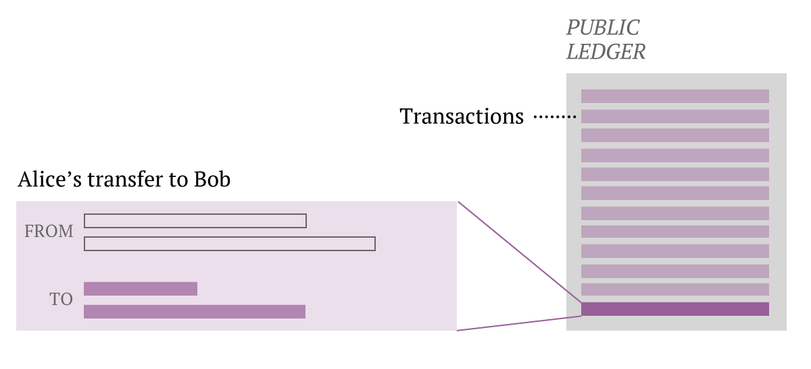

Building Your Own Blockchain
Published on 12/1/2017
You’re here because, like me, you’re psyched about the rise of Cryptocurrencies. And you want to know how Blockchains work—the fundamental technology behind them. But understanding Blockchains isn’t easy—or at least wasn’t for me. I trudged through dense videos, followed porous tutorials, and dealt with the amplified frustration of too few examples.
I like learning by doing. It forces me to deal with the subject matter at a code level, which gets it sticking. If you do the same, at the end of this guide you’ll have a functioning Blockchain with a solid grasp of how they work.